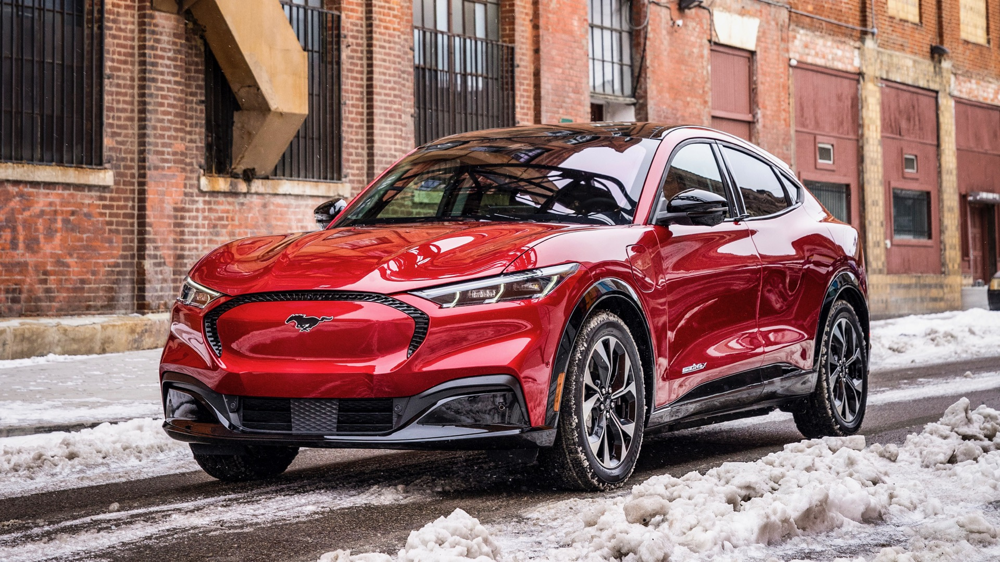
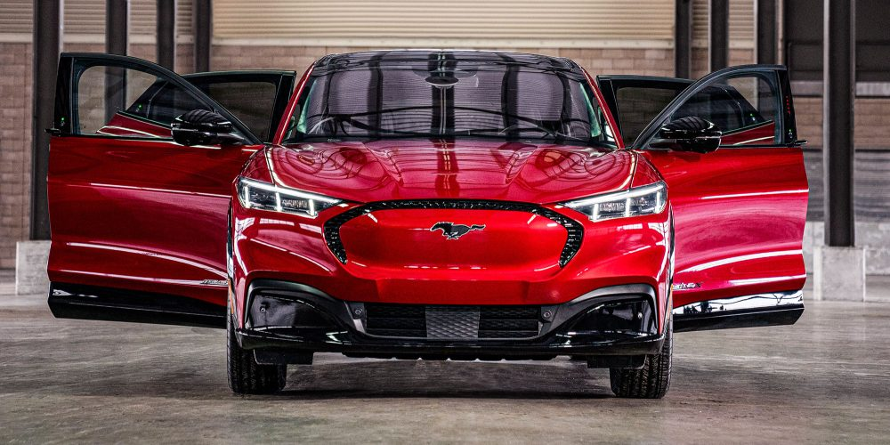
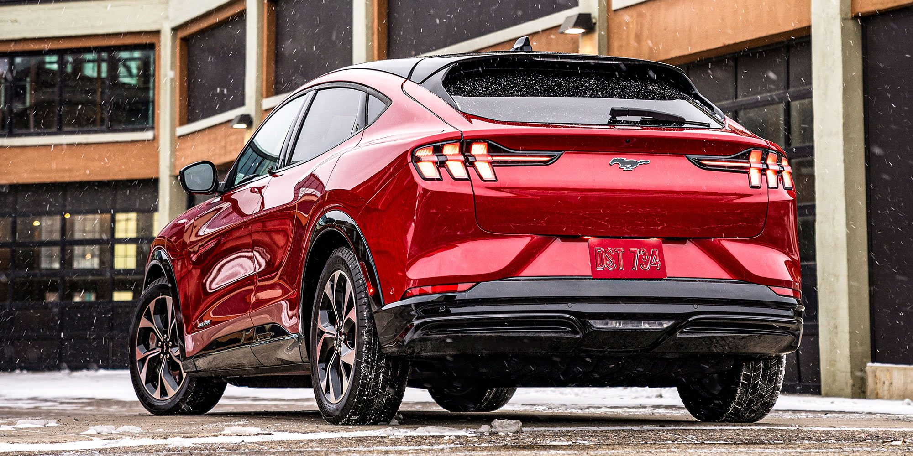

Компания основана в 1903 году Генри Фордом, который создал её, получив на развитие бизнеса $28 000 от пяти инвесторов. Компания
Ford получила известность как первая в мире применившая классический автосборочный конвейер, запущенный впервые 16 августа 1913.
Первой получившей массовое признание моделью, выпускаемой компанией, стал Ford Model T, выпускавшийся в 1908—1927 годах.
В конце 1920-х годов с компанией руководством СССР был заключён договор о помощи при строительстве автозавода в Нижнем Новгороде.
Первые автомобили нового советского автозавода — ГАЗ-А и ГАЗ-АА, были лицензионными копиями машин компании «Форд».
В конце 1930-х годов компания не пользовалась доверием американских военных из-за нескрываемых пронацистских симпатий основателя. В 1930-х годах
Ford построил на территории нацистской Германии производство, которое выпустило для нужд Вермахта 12 тыс. гусеничной и 48 тыс. единиц колёсной техники.
Руководитель компании был награждён высшей наградой Третьего рейха. Тем не менее, со вступлением США во Вторую мировую войну компания начала выпуск армейских
грузовиков и джипов для американских войск (уже не своей конструкции — Ford GPW был адаптированной версией Willys MB), выступала смежником в танкостроительной программе США.
В середине 2000-х годов из-за жёсткой конкуренции на мировом автомобильном рынке компания Ford испытывала серьёзный финансовый кризис.
В 2006 году президентом компании стал Алан Малалли, который продал подразделения Aston Martin и Volvo Cars, провёл успешную
реструктуризацию запустив новую стратегию «Единый Ford» — согласно которой Ford должен постепенно начать выпуск глобальных автомобилей,
общих для всех рынков, что вернуло компанию к прибыльности.
С 1922 Ford Motor Company является собственником бренда Lincoln, под ним по-прежнему успешно производятся роскошные автомобили. В 1939 году Ford Motor Company
основала бренд Mercury, под ним производились автомобили средней ценовой категории, но от него было решено отказаться и в 2010 году бренд прекратил своё существование.
В 1986 году была приобретена английская марка Aston Martin. Во II квартале 2007 года Ford Motor Company продала подразделение Aston Martin консорциуму инвесторов за $925 млн.
Приобретённые в 1990 году Jaguar за 2,5 млрд и в 2000 Land Rover за 2,73 млрд долл. отошли к индийской Tata Motors в 2008. Оба бренда обошлись в 2,3 млрд долл.
Volvo Cars был приобретён в 1999 году. 29 марта 2010 года китайская компания Zhejiang Geely объявила о достижении договорённости о приобретении Volvo Cars у компании Ford Motor
за 1,8 млрд долларов. Все интеллектуальные права на разработки шведской компании, как планировалось, остались у Volvo, а Geely получило к ним полный доступ. Сделка была закрыта в начале
августа 2010 года.
Также Ford Motor Company имеет долю акций в других компаниях, таких как Kia Motors Corporation и Mazda Motor Corporation. В апреле 2019 года концерн заключил соглашение с
молодой американской компанией Rivian (англ.) Automotive, занимающимся разработкой электрических пикапов и внедорожников, инвестировав в американский стартап порядка 500 млн долларов.


